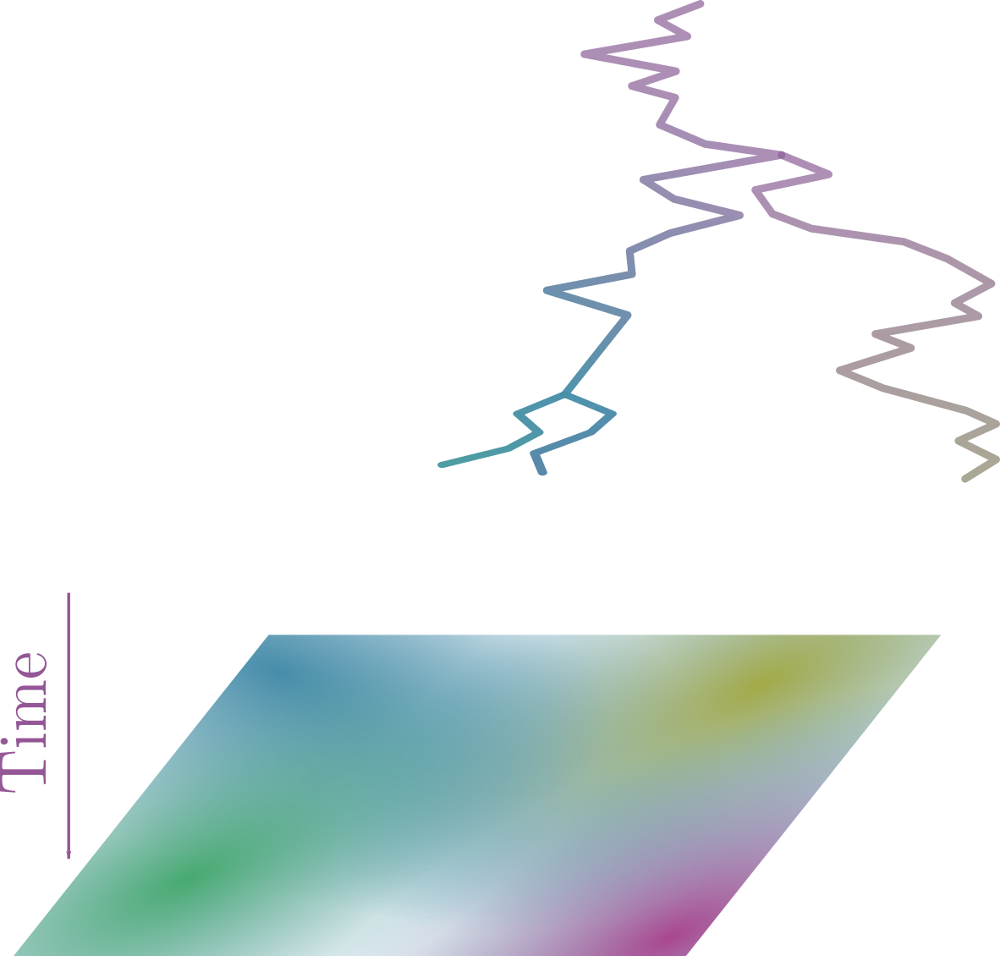
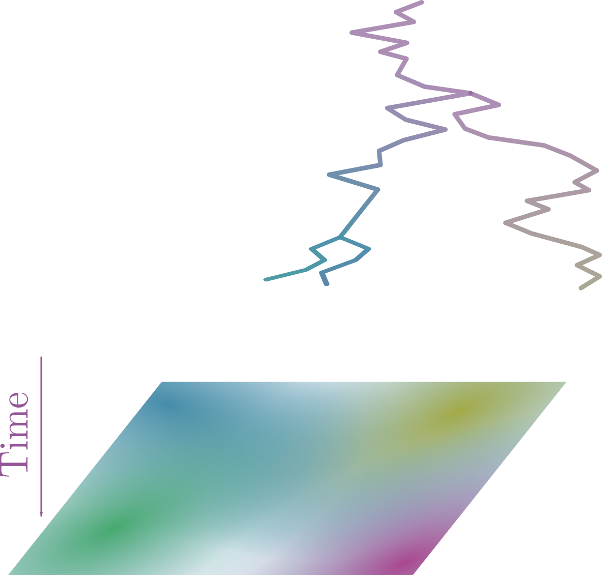
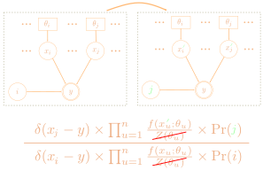
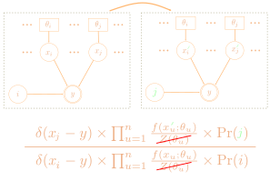
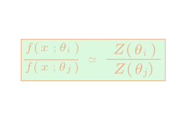

Bayesian phylogeography along a continuum: sampling its way in a random walk
Laboratoire d'Informatique, de Robotique et de Microélectronique de Montpellier
@MAB_Montpellier
Conférence KIM Data & Life Sciences
11 octobre 2021
@MAB_Montpellier
Conférence KIM Data & Life Sciences
11 octobre 2021
Data
- Geo-referenced genetic sequences
- Relationship between sequences and locations is not one-to-one
- Sequence alignment $\rightarrow$ phylogeny
- Phylogeny + coordinates $\rightarrow$ dispersal and density
Modelling sequences in space and time...
- Mechanistic vs. non-mechanistic
- Mechanistic: relevant biologically
- Non-mechanistic: computationally efficient
- Forward-in-time vs. backward-in-time
- Forward: relevant biologically, population level
- Backward: facilitates inference, sample level
... is a risky business!
- Isolation-by-distance model sensu Wright-Malécot not consistent (Felsenstein's ''pain in the torus'')
- Sometimes non-sensical, e.g., Brownian trajectories never intersect in two dimensions...
- Sampling consistency: dispersal dynamics of a lineage depends on the size of the sample considered
Structured coalescent
- Takahata, Hudson, Notohara (90’)
- Backward-in-time, mechanistic (asymptotically)
- Accomodates for "patterns" in sampling
- Partition into demes in often not driven by biology
- Ghost demes are an issue
- S.G., Guo, Welch, (2016). Demographic inference under the coalescent in a spatial continuum
- J. Wirtz and S.G., (2021). Rate of coalescence of pairs of lineages in the spatial Lambda-Fleming-Viot process
Structured coalescent
- Takahata, Hudson, Notohara (90’)
- Backward-in-time, mechanistic (asymptotically)
- Accomodates for "patterns" in sampling
- Partition into demes in often not driven by biology
- Ghost demes are an issue

- S.G., Guo, Welch, (2016). Demographic inference under the coalescent in a spatial continuum
- J. Wirtz and S.G., (2021). Rate of coalescence of pairs of lineages in the spatial Lambda-Fleming-Viot process
Mugration model
- Lemey et al. (2009)
- Forward-in-time, not mechanistic
- Migrations as a CTMC (conditionned on tree)
- Coalescent as underlying tree-generating process?
- Does not accomodate for "patterns" in sampling
Mugration model
- Lemey et al. (2009)
- Forward-in-time, not mechanistic
- Migrations as a CTMC (conditionned on tree)
- Coalescent as underlying tree-generating process?
- Does not accomodate for "patterns" in sampling
Relaxed random walk
- Lemey et al. (2010)
- Forward-in-time, not mechanistic
- Migrations as a diffusion process
- Convergence to Kingman's coalescent?
- Does not accomodate for "patterns" in spatial sampling
- Kalkauskas, A. et al. (2021) Sampling bias and model choice in continuous phylogeography: Getting lost on a random walk
Our contribution
- Ignoring patterns in spatial sampling is a pervasive issue
- Discretizing space is not always relevant
- Keep flexibility of Brownian motion in two dimensions, forward-in-time
- Incorporate sampling schemes in the model
- Design an appropriate Bayesian inference approach
Sampling schemes
- Detection scheme: places of sampling purely driven by the outcome of the migration process running along the tree

 

Sampling schemes
- Detection scheme: places of sampling purely driven by the outcome of the migration process running along the tree
Sampling schemes
- Detection scheme: places of sampling purely driven by the outcome of the migration process running along the tree
- Survey scheme: places of sampling not determined by the outcome of the evolutionary process. Driven by practical considerations instead

Bayesian modelling
Detection scheme
- $s(\mathbf{e}|\mathbf{l},\tau,\sigma,\theta) := \delta(\mathbf{l}-\mathbf{e}) \rightarrow$ the outcome of the evolutionary process ($\mathbf{l}$) fully determines that of the sampling process ($\mathbf{e}$)
Survey scheme
- $s(\mathbf{e}) \rightarrow$ sampling not conditionned on the outcome of the evolutionary process
- $f(\mathbf{l}|\tau,\sigma,\mathbf{e}) \rightarrow$ Brownian process conditionned on $\mathbf{e}$.
Challenges with the survey scheme
- $Z(\sigma,\theta) = f(\mathbf{l}|\sigma,\theta)$ not computationally tractable
- Function of dispersal and coalescence rate
- Updating $\sigma$ or $\theta$ using Metropolis-Hastings and ignoring $Z (\sigma,\theta)$ is incorrect!
- Belongs to the class of ''doubly intractable'' problems (see, e.g., S.G., 2018)
MCMC would not work
"Augmented" MCMC would (almost) work...
 

Exchange algorithm, rationale
Exchange algorithm, rationale

Exchange algorithm, extended
- $\mathbf{x}$, the auxiliary tree and locations must be sampled from the tree-and-location generating process, given $\mathbf{e}$ but ignoring $\mathbf{s}$
- Direct sampling is not feasible here...
- Use standard MCMC instead

Simulation results: diffusion estimates
West Nile virus
Conclusion
- Location of samples may or may not match with the expected outcome of the evolutionnary process
- Detection scheme vs. survey scheme $\rightarrow$ impact on the inference is substantial
- Exchange algorithm suitable for inference under survey scheme
- Fix "mugration" model
- Combine distinct sampling schemes in the same analysis
- Collaborator: Nicola De Maio
- Funding: ANR GENOSPACE